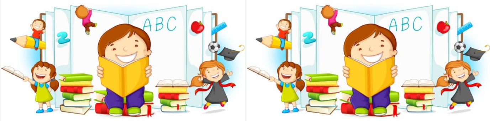

CUENTOS PARA NIÑOS

EL SECRETO DEL SALÓN 10B
Era una mañana fría de lunes cuando los estudiantes del salón 10B regresaron al colegio despues de las vacaciones. Todo parecía normal, pero había algo diferente en el ambiente. El silencio era demasiado profundo, como si el salon estuviera esperando algo.
Laura fue la primera en nota que algo no estaba bien. Su silla estaba movida y su cuaderno abierto en una página que no recordaba haber escrito. Andrés también encontró cosas fuera de lugar. Algo extraño estaba ocurriendo, pero nadie sabía exactamente qué.
De repente, la puerta se cerró de golpe sin que nadie la tocara. Todos se quedaron en silencio. —¿Viste eso? —preguntó Carlo—. Nadie estaba cerca.
En ese momento, las luces comenzaron a parpadear y en el tablero apareció lentamente un mensaje: "No debieron volver". Algunos estudiantes querían salir corriendo, pero otros sentían curiosidad.
EL DESCUBRIMIENTO
Decidieron revisar el salón con cuidado. En la parte trasera encontraron una caja vieja llena de papeles. Había listas de estudiantes, tareas antiguas y una fotografía de una clase de hace muchos años.
Lo más inquietante era que uno de los estudiantes en la foto estaba tachado con marcador rojo. Debajo de la imagen se leía: "Expulsado por comportamiento inexplicable".
—Esto tiene que estar relacionado con lo que está pasando —dijo Laura—. Tal vez alguien quiere que descubramos la verdad.
UNA DECISIÓN IMPORTANTE
El grupo tenía miedo, pero también curiosidad. Podían ignorar lo ocurrido o investigar más a fondo. Después de discutirlo, decidieron quedarse después de clases para descubrir qué estaba pasando realmente.
Antes de irse, encontraron otra pista escrita en una hoja: "Si quieres saber más, busca en la antigua biblioteca del colegio".
Algunos estudiantes decidieron investigar más en internet sobre historias similares. Si quieres leer más cuentos misteriosos como este, visita este sitio web.
Ese día comprendieron que el salón 10B no era un lugar común. Y que lo que había comenzado como un día normal, se convertiría en una historia que jamás olvidarían.